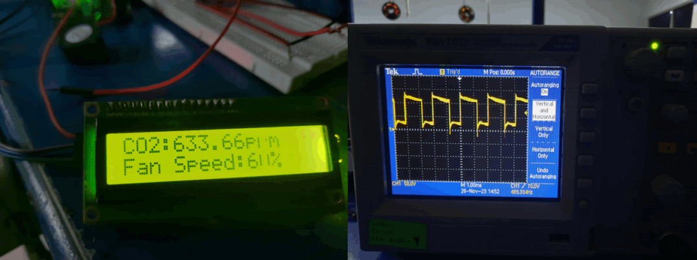
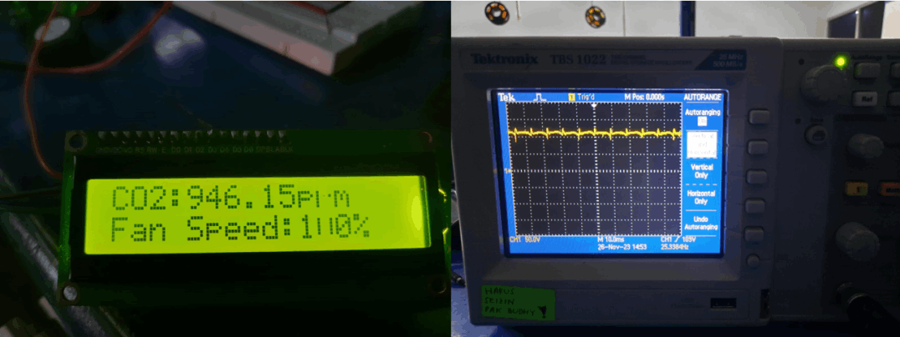

Desain terdiri dari 2 masukan dari 2 sensor yang digunakan dengan 1 keluaran untuk kecepatan fan. Untuk suhu diatur ke dalam 3 kondisi yaitu dingin (18-20-22 C), normal (20-22-26-28 C), dan panas (26-28-30 C) dengan kurva trapesium. Sedang kan untuk CO2 diatur juga menjadi 3 kondisi yaitu rendah (0-200-400 ppm), sedang (200-400-600-800 ppm), dan bahaya (600-800-1000 ppm) dengan kurva trapesium. Dalam output yang berupa kecepatan fan, diatur kedalam 3 kondisi yaitu slow (0-80-160 rpm), medium (80-160-250 rpm), dan fast (160-250 rpm) dengan kurva segitiga.
Responsive
Mobile friendly
Keterangan:
1. Sensor DHT 11 berfungsi untuk membaca suhu udara ruangan.
2. Sensor MQ-135 berfungsi untuk mendeteksi kandungan udara dalam ruangan.
3. Arduino sebagai penerima data sensor dan mengirim output PWM ke IRFZ44N.
4. IRFZ44N berfungsi untuk mengatur kecepatan putar kipas fan.
5. Kipas fan mengeluarkan udara dalam ruangan.
Berikut adalah dokumentasi hasil uji coba yang telah dilakukan :